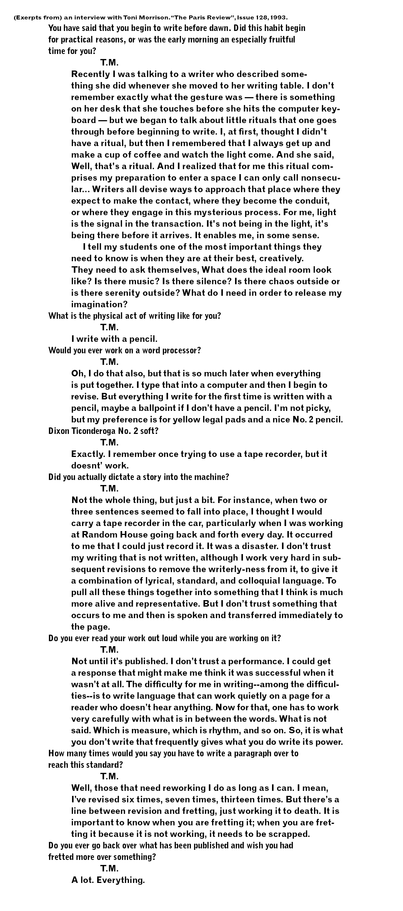

Experiment 3: Interview with Toni Morrison
Date: April 2020
Size: 297 x 670 mm
'I tell my students one of the most important things they need to know is when they are at their best, creatively. They need to ask themselves, What does the ideal room look like? Is there music? Is there silence? Is there chaos outside or is there serenity outside? What do I need in order to release my imagination?' interview

